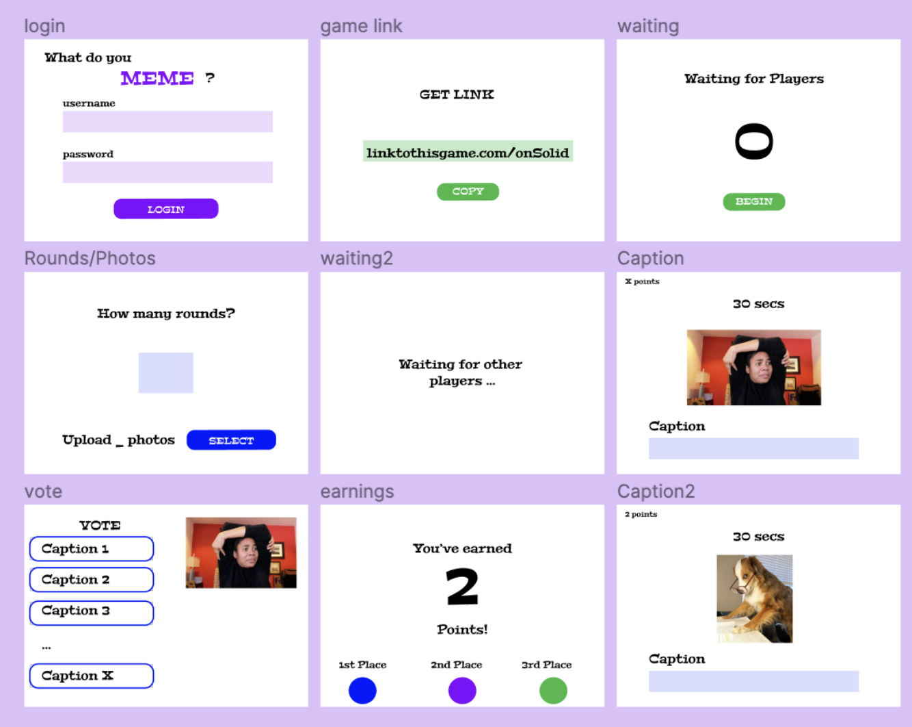

That's a SOLID meme is a decentralized way for players to play a meme-captioning party game using their own photos. All players maintain complete ownership of their own data due to Solid's decentralized pod structure.
Solid is a mid-course correction for the web created by Prof. Tim Berners-Lee, inventor of the World Wide Web.
That's a SOLID meme allows players to connect with friends, play with their own photos, and own their own data. Our initial project focused on wealth sharing, like mutual aid networks and cundinas. However, we soon discovered that there is a high-barrier to entry with decentralized technologies because of poor user experience. We decided to create a game to create a way to make Solid understandable and useful. Our game intended to pique interest in Solid for other developers, including the rest of our fellowship cohort, and give users an option to play games while opting out of the predominant technology profit model.
There is joy in resistance.
